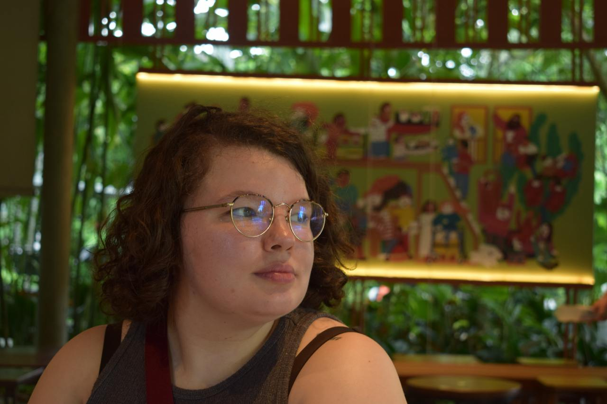

Current Spark
I am collecting playful stories from everyday life and shaping them into essays with personality and heart.
Hi, I am Lucy. This space is a bright notebook for reviews, reflections, and experimental stories about art, culture, and the small details that make life feel alive.

Main portrait
I am collecting playful stories from everyday life and shaping them into essays with personality and heart.
New notes are brewing on books, design, memory, and strange beautiful moments that deserve a spotlight.
Want to collaborate, commission, or share a thought?
Email Lucy